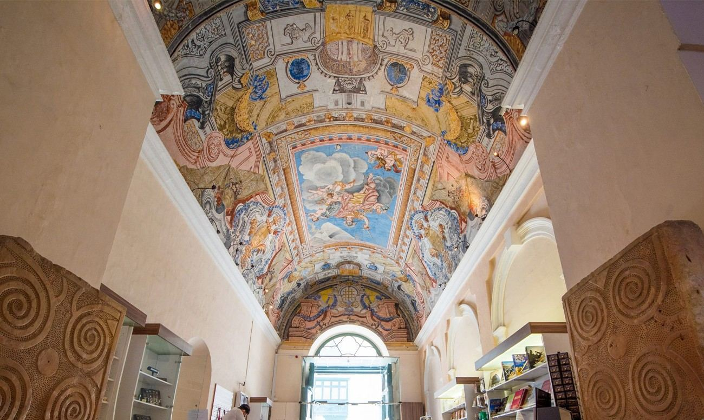

Festivals · Arts
Malta Biennale 2028
- Dates
- Dates TBA
- Location
- Valletta, Malta
- Format
- In-person
- Category
- Arts
- Industry
- Contemporary art biennale
- Organiser
- Malta Biennale Foundation / Heritage Malta
- Official website
- https://maltabiennale.art/news/rosa-martinez-returns-as-artistic-director-for-the-malta-biennale-2028
About
Third edition. Official wording is “between March and May 2028” without published opening and closing days, so dates are left blank (dates TBA). Mid-2028 is inside the atlas window.
Topics: contemporary art, heritage sites, visual arts.
No organiser attendance figure found on the official pages fetched 24 Nov 2026. Ranked by our estimated size tier 'large' (30,000-100,000 attendees/visits), a judgement from format, venue and scale, not an official number.